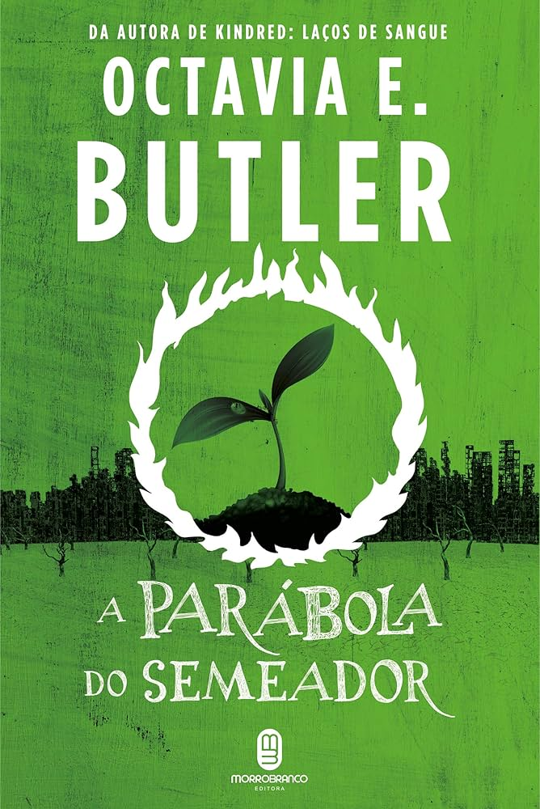
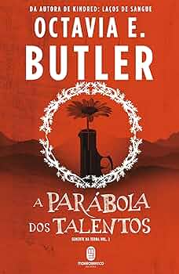

Tudo sobre Octavia Butler
Octavia Estelle Butler (Pasadena, 22 de junho de 1947 – Lake Forest Park, 24 de fevereiro de 2006), mais conhecida
por Octavia Butler, foi uma escritora afro-americana consagrada por seus livros de ficção científica feminista e por
inserir a questão do preconceito e do racismo em suas histórias.
Octavia Butler decidiu tornar-se escritora aos doze anos ao assistir ao filme Devil Girl from Mars e convencendo-se de
que poderia escrever uma história melhor. Depois de vender algumas histórias para antologias, adquiriu notoriedade a partir
dos anos 1980, ganhando os prêmios Nebula e Hugo. Mas foi a publicação dos livros Parable of the Sower (1993) e
Parable of the Talents (1998) que solidificou sua fama como escritora. Em 2005, ela foi admitida no Hall Internacional
da Fama de Escritores Negros.
Após sua morte, em 2006, uma bolsa de estudos que leva seu nome foi criada para incentivar estudantes negros inscritos nas
oficinas de escrita onde Butler foi aluna e, mais tarde, professora.
Biografia
Octavia Estelle Butler nasceu em 1947, em Pasadena, na Califórnia, filha única de Octavia Margaret Guy, uma empregada doméstica,
e Laurice James Butler, um engraxate. O pai de Butler morreu quando ela tinha sete anos, ficando sua criação a cargo da mãe e da
avó materna. Posteriormente, a autora classificaria seu ambiente familiar como "estritamente Batista".
Octavia cresceu na comunidade racialmente integrada da cidade de Pasadena, o que lhe permitiu viver num espaço de diversidade
cultural e étnica em meio à segregação racial nos Estados Unidos. Mesmo assim, a autora também se familiarizou com o funcionamento
da supremacia branca, como nas ocasiões em que acompanhou sua mãe ao trabalho: nestes momentos, a escritora chegou a ver sua mãe
entrando nas casas de pessoas brancas pelas portas dos fundos e também presenciou pessoas brancas falando a ela ou dela de maneira
desrespeitosa. Diversas vezes, a mãe de Butler trouxe para casa livros e revistas que as famílias brancas haviam jogado
fora para sua jovem filha ler.
Desde muito cedo, uma timidez quase paralisante tornou difícil para Octavia se socializar com outras crianças.
Essa dificuldade, junto com uma pequena dislexia que tornava seus trabalhos escolares um tormento, a fez acreditar que ela era
"feia e estúpida, desajeitada e socialmente incorrigível". Ela cresceu até atingir 1,80 m de altura, se tornando alvo fácil para
bullies. Como resultado, ela frequentemente passava seu tempo lendo na Biblioteca Pública de Pasadena e escrevendo resmas
e resmas de páginas em seu "grande caderno rosa".
Aos dez anos, ela implorou que sua mãe lhe comprasse uma máquina de escrever Remington, na qual "escreveu [suas] histórias a dois
dedos". Aos doze anos, ao assistir à versão televisionada do filme Devil Girl from Mars, convenceu-se de que poderia escrever uma
história melhor. Escreveu, então, o rascunho do que, mais tarde, se tornaria a base para seus romances da série Patternist.
Até então alegremente desavisada dos obstáculos que uma escritora negra e mulher poderia encontrar, a jovem autora se tornou
insegura pela primeira vez aos treze anos quando sua bem-intencionada tia Hazel transmitiu-lhe a realidade da Segregação em
cinco palavras: "Querida... negros não podem ser escritores". Mesmo assim, Butler perseverou em seu desejo de publicar uma
história, chegando a pedir ao seu professor de ciências do ensino fundamental, Sr. Pfaff, que digitasse o primeiro manuscrito
que ela enviou a uma revista de ficção científica.
"Comecei a escrever sobre poder já que eu tinha tão pouco dele."Retornar ao início ↑
- Octavia Butler, The Voice before the Void
Carreira
A ascensão à notoriedade de Butler começou em 1984, quando seu conto "Speech Sounds" ganhou o Prêmio Hugo de Melhor Conto e "Bloodchild" ganhou os prêmios Hugo, Locus e Science Fiction Chronicle Reader de melhor Novelette. Nesse tempo, Butler viajou à floresta amazônica e aos Andes, com o intuito de realizar pesquisa para o que se tornaria sua trilogia Xenogenesis, composta pelos livros Dawn (1987), Adulthood Rites (1988) e Imago (1989).
-

Livro A Parábola do Semeador -

Livro A Parábola dos Talentos
Durante os anos 1990, Butler trabalhou nos romances que solidificaram sua fama como escritora: Parable of the Sower (1993)
e Parable of the Talents (1998). Em 1995, ela se tornou a primeira escritora de ficção científica a ganhar a bolsa do programa
MacArthur Fellows da fundação John D. e Catherine T. MacArthur, cujo prêmio em dinheiro é de 295 mil dólares.
Em 1999, depois da morte de sua mãe, Butler se mudou para a cidade de Lake Forest Park, em Washington.
Seu livro Parable of the Talents havia ganhado o prêmio Nebula de Melhor Romance da Science Fiction Writers of America (SFWA)
e a autora tinha planos para mais quatro romances na série: Parable of the Trickster, Parable of the Teacher, Parable of Chaos
e Parable of Clay. Contudo, depois de falhar diversas vezes em começar Parable of the Trickster, Butler decidiu parar de
trabalhar na série. Em entrevistas posteriores, a autora explicou que a pesquisa e a escrita dos romances da série
sobrecarregaram e deprimiram-na. Por conta disso, ao invés de continuar a série, decidiu escrever algo "leve" e "divertido",
que se tornou seu último livro: Fledgling (2005), uma história que combina ficção científica e vampiros.
Durante seus últimos anos, Butler lutou contra o bloqueio critativo e a depressão, em parte por conta dos efeitos colaterais
de sua medicação para pressão alta.
Ela continuou escrevendo e ensinando regularmente no Clarion's Science Fiction Writers' Workshop.
Temas
Crítica de hierarquias contemporâneas
Em diversas entrevistas e ensaios, Butler definiu sua visão da humanidade como inerentemente marcada por uma tendência ao pensamento hierárquico, o qual pode levar à intolerância, e também, caso não seja mantido sob controle, à derradeira destruição da espécie humana. Suas histórias frequentemente reproduzem a dominação darwiniana da humanidade do fraco pelo forte como um tipo de parasitismo. Não raro, estes seres superiores, quer sejam alienígenas, vampiros, super-humanos ou senhores de escravos, encontram-se desafiados por um protagonista que encarna a diferença, a diversidade e a mudança.
A reconstrução do humano
Em seu ensaio sobre o pano de fundo sociobiológico da trilogia Xenogenesis, J. Adam Johns descreve a maneira pela qual a narrativa de Butler contraria a pulsão de morte por trás do impulso hierárquico com um amor inato pela vida (biofilia), particularmente por vidas estranhas, diferentes. Como maneira de corrigir as causas sociobiológicas da violência hierárquica, as histórias de Butler apresentam alternativas como manipulação genética, cruzamento de diferentes raças, miscigenação, simbiose, mutação, contato com alienígenas, sexo não-consensual, contaminação e outras formas de hibridismo. Como De Witt Douglas Kilgore e Ranu Samantrai apontam, "nas narrativas de Butler, a ruína do corpo humano é literal e metafórica, pois ela significa as mudanças profundas que são necessárias para se moldar um mundo não organizado por violência hierárquica". Assim, a maturidade evolucionária alcançada pelo protagonista híbrido e biogeneticamente modificado no fim da história sinaliza a possível evolução da comunidade dominante em termos de tolerância, aceitação da diversidade e um desejo de exercer o poder responsavelmente.
O sobrevivente como herói
Os protagonistas de Butler são indivíduos marginalizados que aguentam, se resignam e aceitam mudanças radicais para sobreviver. Como De Witt Douglas Kilgore e Ranu Samantrai apontam, as histórias de Butler focam-se em personagens de minorias, cujos antecedentes históricos já os tornam íntimos com violação brutal e exploração, e, daí, a necessidade de resignação para sobreviver. Mesmo quando dotados de habilidades extras, estas personagens são forçadas a experimentar angústias e exclusões físicas, mentais e emocionais sem precedentes para garantir um nível mínimo de agência e impedir que a humanidade atinja a auto-destruição. Em várias histórias, seus atos de coragem se tornam atos de compreensão e, em alguns casos, de amor, à medida que eles chegam num acordo crucial com aqueles no poder. Em última análise, o foco de Butler em personagens marginalizados serve para ilustrar tanto a exploração história de minorias e como a determinação de um indivíduo explorado pode trazer mudanças críticas.
A criação de comunidades alternativas
As histórias de Octavia Butler apresentam comunidades mistas fundadas por protagonistas africanos e povoadas por indivíduos diversos, mesmo que de pensamento similar. Seus membros podem ser humanos de ascendência africana, europeia ou asiática; extraterrestres (como os N'Tlic em "Bloodchild"); de uma espécie diferente (como os vampíricos Ina em "Fledgling") ou mestiços (como os humanos-oankali Akin e Jodahs em "Lilith's Brood"). Em algumas histórias, o hibridismo da comunidade resulta numa visão flexível de sexualidade e gênero (por exemplo, as famílias estendidas em Fledgling). Deste modo, Butler cria laços entre grupos que são, de modo geral, considerados como separados e sem relação, e sugere o hibridismo como "a potencial raiz da boa família e da vida abençoada em comunidade".
"Para sobreviver, conheça o passado. Deixe tocá-lo. Então deixe o passado ir embora."
- Trecho de Semente da Terra: O Livro dos Vivos, livro ficcional escrito pela protagonista de Parábola do Semeador e Parábola dos Talentos
Raça e gênero
Butler começou a ler ficção científica na juventude, mas rapidamente se desencantou com as representações sem imaginação de
etnicidade e classe do gênero, bem como a ausência de protagonistas femininas de destaque. Ela decidiu corrigir estas
ausências, como dizem Kilgore and Samantrai, "escolhendo escrever conscientemente como uma mulher afro-americana marcada
por uma história particular" — o que Butler chamou de "me escrever para dentro". As histórias de Butler, assim,
são geralmente escritas da perspectiva de uma mulher negra marginalizada, cuja diferença dos agentes dominantes aumenta
seu potencial de reconfigurar o futuro da sociedade.
Em 2000, Charlie Rose entrevistou Octavia Butler logo depois do prêmio da MacArthur Fellowship. Os pontos altos são as
perguntas íntimas que surgem da narrativa de vida de Butler e o interesse dela em se tornar não apenas uma escritora,
mas uma escritora de ficção científica. Rose perguntou: "Qual é o ponto central daquilo que você quer dizer sobre raça?"
Ao que Butler respondeu: "Será que eu quero dizer algo central sobre raça? Além de 'Olá, estamos aqui!'? Isto demonstra
uma afirmação essencial para Butler: que o mundo da ficção científica é um mundo de possibilidades e, embora a raça seja
um elemento inato, ela está embutida na narrativa, e não forçada nela.
Obras literárias
| Série | Título | Título no Brasil |
|---|---|---|
| Patternist (1976–1984) | Patternmaster (1976) | |
| Mind of My Mind (1977) | Elos da Mente (2022) | |
| Survivor (1978) | ||
| Wild Seed (1980) | Semente Originária (2021) | |
| Clay's Ark (1984) | Arca de Clay (2023) | |
| Xenogenesis (1987–1989) | Dawn (1987) | Despertar (2018) |
| Adulthood Rites (1988) | Ritos de Passagem (2019) | |
| Imago (1989) | Imago (2021) | |
| Parable (1995–1998) | Parable of the Sower (1995) | A Parábola do Semeador (2018) |
| Parable of the Talent (1998) | A Parábola dos Talentos (2019) |
Romances autônomos
- ● Kindred (1979) no Brasil: Kindred: Laços de Sangue (2019)
- ● Fledgling (2005) - não publicado no Brasil
Coletânea de contos
- ● Bloodchild and Other Stories (1995) no Brasil: Filhos de Sangue e Outras Histórias (2020)
- ● Unexpected Stories (2014) - não publicado no Brasil